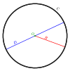

circumference

Definition: In geometry, the circumference (from Latin circumferens, meaning "carrying around") is the perimeter of a circle or ellipse. That is, the circumference would be the arc length of the circle, as if it were opened up and straightened out to a line segment. More generally, the perimeter is the curve length around any closed figure.
Source: Wikipedia
Wikipedia Page
Wikidata Page